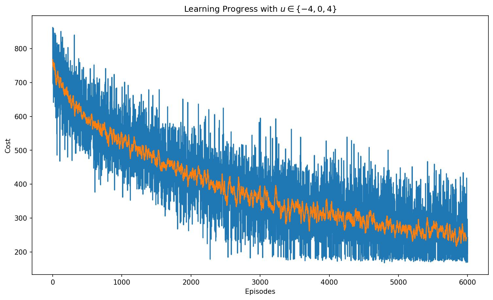
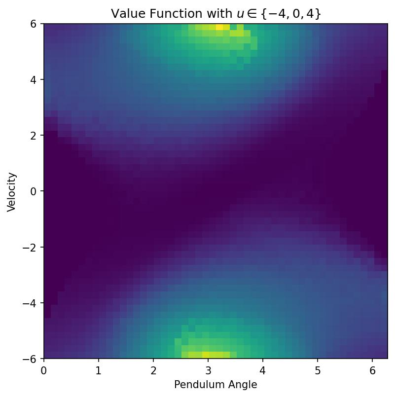
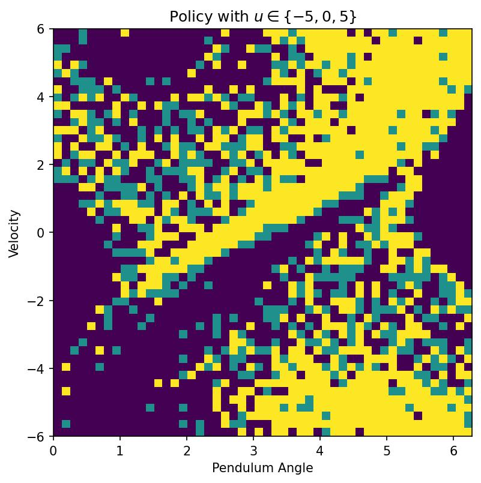
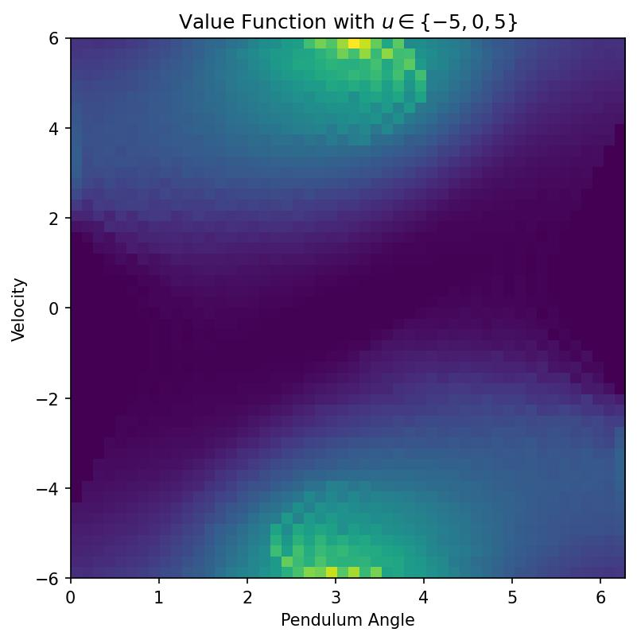

Abstract
TL;DR: The system was able to learn a policy for an inverted pendulum model to make it do a swing-up motion.
The Q-learning algorithm took 6000 episodes to learn how to invert the pendulum. As can be seen in the video above, there is one back and forth swing before the pendulum can lift up and remain inverted.
Approach

The Pendulum is depicted in the image above.
In this scenario the inverted pendulum has a limit on the maximum torque it can apply,
therefore it is necessary for the pendulum to do a few "back and forth" motions to be able to
reach the inverted position (\(\theta=\pi\)) from the standing still non-inverted position (\(\theta=0\)).
The state will be written as \(x = \begin{pmatrix} \theta \\ \omega \end{pmatrix}\) as the vector of states of the system.
And the dynamics will be time-discretized , and refer to \(x_n\) as the state at time \(t = n \Delta t\) (assuming discretization time \(\Delta t\))
The following discounted cost function needs to be minimized.
\(\sum_{i=0}^{\infty} \alpha^i g(x_i, u_i)\) where
\begin{equation}
g(x_i, u_i) = (\theta-\pi)^2 + 0.01 \cdot \dot{\theta}_i^2 + 0.0001 \cdot u_i^2 \qquad \textrm{and} \qquad\alpha=0.99
\end{equation}
This cost mostly penalizes deviations from the inverted position but also encourages small velocities and control.
Using a control of \(u \in \{-4,0,4\}\)
Below shows the outcome of the Q-Learning process when the control is \(u \in \{-4,0,4\}\).

Shown in the graph is the cost per episode (shown in blue), and the average cost (shown in orange). The graph shows the decrease in cost as the Q-learning is taking place. The Q-learning algorithm for this control, took 6000 episodes to learn how to invert the pendulum.
Below are the value functions and policy for this control scheme.
 
The policy is the optimal action to take at each state. The value function is the associated value at each state when performing the optimal action.
Using a control of \(u \in \{-5,0,5\}\)
Controller that ensures the robot reachs a vertical orientation, \(\theta = \frac{\pi}{2} \) at the location \(x = 3 , y = 3\) at time \(t = 5\) starting from the origin.
During the remainder of the motion, the robot trys to stay close to the origin.

The Q-learning algorithm for this control, again took 6000 episodes to learn how to invert the pendulum. This time learning slightly more.
Below are the value functions and policy for this control scheme.

Acknowledgements
I would like to specially thank the Professor Ludovic Righetti for allowing me to showcase this project on my website.